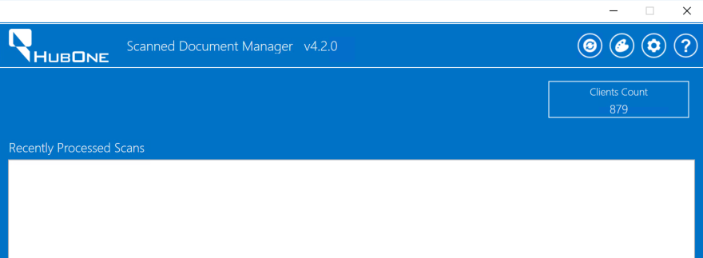
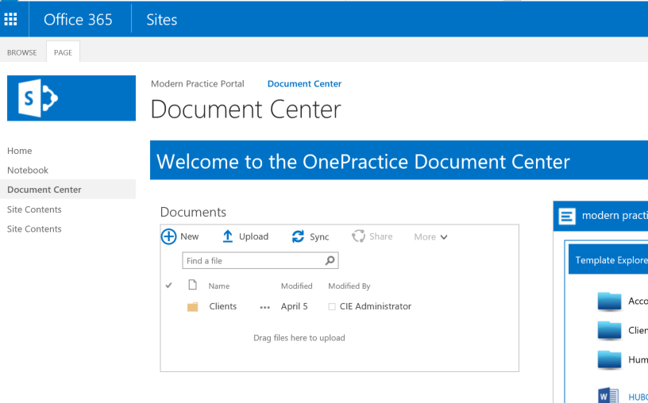
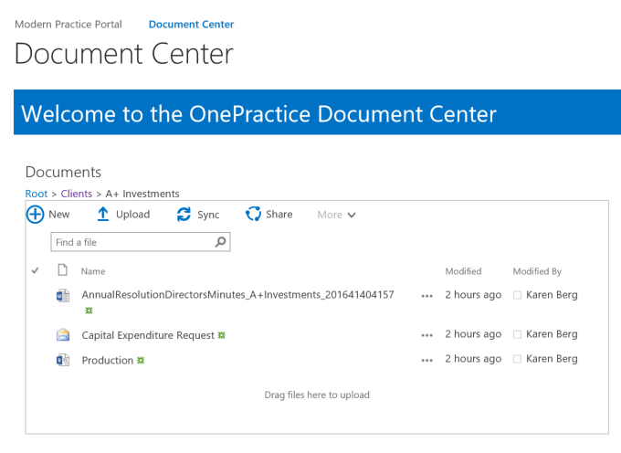
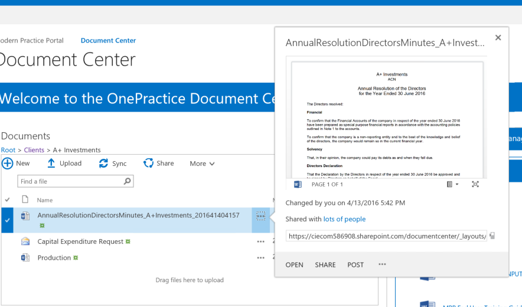
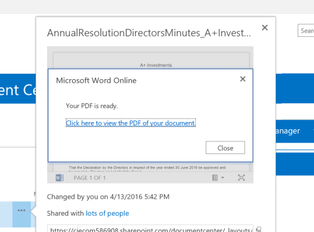
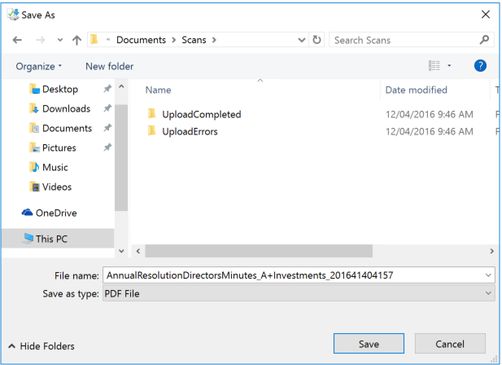
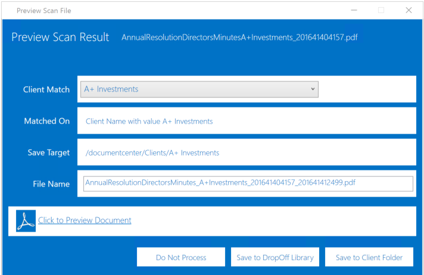
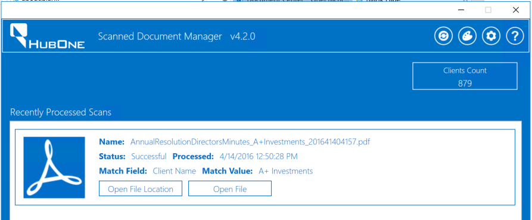

|
<< Click to Display Table of Contents >> Navigation: »No topics above this level« Moving Data with the Connected Practice |
Many accounting practices have a significant volume of data to migrate from On-Premises Servers to the Cloud. Included in the package, CA Kairos comes with 1TB of Data Storage.
The Connected Practice Migration Manager assists with moving data from your systems to the cloud:
•The data migration manager simply and quickly moves files, folders and meta data from your existing systems to the cloud.
Accounting Practices regularly receive paper documents from clients. Whilst many practices scan and file these documents, it introduces a significant workload to the practice. Scanned Document Manager included in the Connected Practice helps file these documents automatically.
For Example:
Karen has receieved a document from a client. She has scanned the document and want it files to the client folder.
Karen runs Scanned Document Manger
(Windows Key Scanned)

When scanned document manager has found the clients, you can successfully minimise it.
Navigate to the document center https://<tenant>.sharepoint.com/documentcenter

Under Documents click Clients
Choose a Client

Click the elipsis (...) next to the Annual Resolution Document

under the document preview, choose the drop down menu and choose Print to PDF

When the PDF is ready, click click here to view the PDF...
Drop down save and choose Save As... and navigate to Documents -> Scans

Click Save

As Scanned Document Manager is running in Manual Mode, it will provided a pop-up showing it has chosen the correct client. Click Save to Client Folder to automatically file this document.
Finally, Click Scanned Document Manager from the task bar:

Feel free to play with other documents.